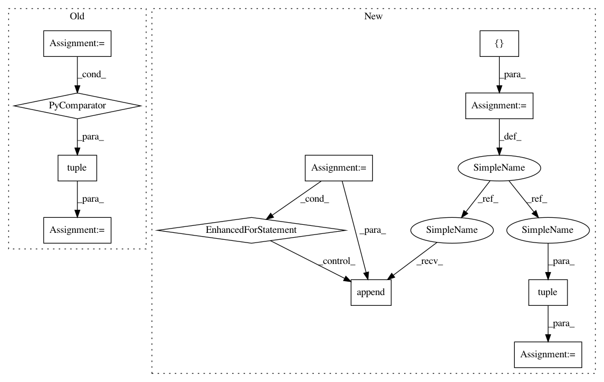

bf464d7ed9283988fea1f548a11a0171fd2ff364,keras/utils/version_utils.py,,swap_class,#,97
Before Change
return v1_cls
// Recursively search superclasses to swap in the right Keras class.
cls.__bases__ = tuple(
swap_class(base, v2_cls, v1_cls, use_v2) for base in cls.__bases__)
return cls
def disallow_legacy_graph(cls_name, method_name):
After Change
return v2_cls if use_v2 else v1_cls
// Recursively search superclasses to swap in the right Keras class.
new_bases = []
for base in cls.__bases__:
if ((use_v2 and issubclass(base, v1_cls)
or (not use_v2 and issubclass(base, v2_cls)))):
new_base = swap_class(base, v2_cls, v1_cls, use_v2)
else:
new_base = base
new_bases.append(new_base)
cls.__bases__ = tuple(new_bases)
return cls
def disallow_legacy_graph(cls_name, method_name):
In pattern: SUPERPATTERN
Frequency: 3
Non-data size: 11
Instances
Project Name: keras-team/keras
Commit Name: bf464d7ed9283988fea1f548a11a0171fd2ff364
Time: 2021-01-06
Author: gardener@tensorflow.org
File Name: keras/utils/version_utils.py
Class Name:
Method Name: swap_class
Project Name: keras-team/keras
Commit Name: 5ef0fc3215fb43f5772673b31c51ad8a6582bc39
Time: 2018-10-20
Author: mechaprabal@gmail.com
File Name: keras/backend/cntk_backend.py
Class Name:
Method Name: reshape
Project Name: keras-team/keras
Commit Name: 5ef0fc3215fb43f5772673b31c51ad8a6582bc39
Time: 2018-10-20
Author: mechaprabal@gmail.com
File Name: keras/backend/cntk_backend.py
Class Name:
Method Name: squeeze